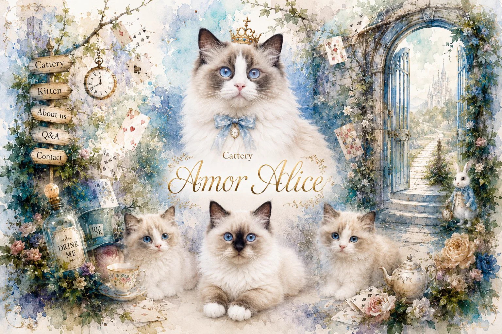
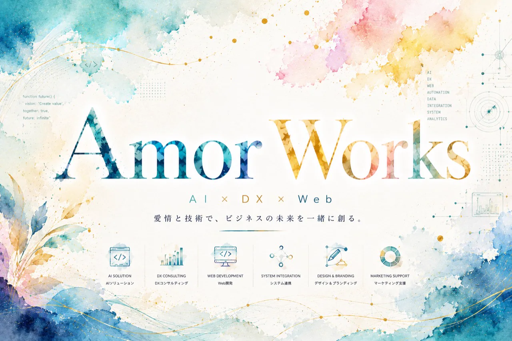
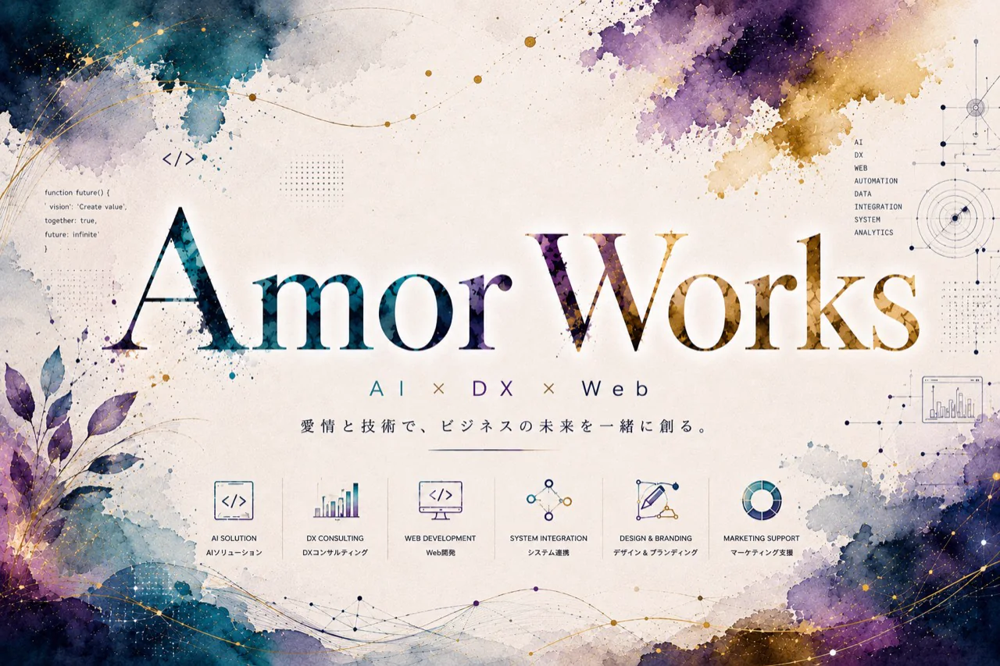

Amor Alice
世界観を伝える猫舎サイト
- 課題
- 世界観・安心感・募集状況が伝わりにくい
- 制作
- ブランドサイト、子猫情報、LINE相談導線
- 整えた点
- 見学前の不安を減らし、相談しやすい入口を整備
AIDXWeb
ホームページ制作、AI導入、DXまで。作るだけではなく、事業が成長し続ける仕組みを設計します。
「何から始めればいいかわからない。」そんな段階から、想いや課題を整理し、一歩ずつ形にします。


誰に、何を伝え、問い合わせ後にどう動くか。制作前の迷いから一緒にほどきます。
Selected Works
見た目だけではなく、どんな用途で、何を伝え、どんな相談や行動につなげるために作ったかを確認できます。
Before Building
「何を載せる？」「誰に届ける？」「何を目的にする？」を先に整理することで、制作後も使い続けられるホームページになります。
FAQ
最初から正しく説明できなくても大丈夫です。小さな違和感や「こうできたらいいな」から、必要な形を一緒に整理します。
できます。今困っていること、作りたい雰囲気、参考サイトなど、分かる範囲から整理します。
できます。文章作成、問い合わせ整理、Excel作業の見直しなど、日々の作業に近いところから始められます。
始められます。必要なページだけで公開し、事業の成長に合わせて更新やDX導線を足していけます。
はい。文章修正、画像差し替え、問い合わせ導線の改善、業務アプリ化の相談まで続けて対応できます。
Operator
自分の事業で実際に使いながら、伝わる入口と回る仕組みを整えています。
Contact / Start Here
まだ内容がまとまっていなくても大丈夫です。「こんなことできる？」という段階から、必要な形を一緒に整理します。
After Submit
ホームページ、DX・AI、Webアプリ、運用サポートなど、分かる範囲の言葉で送れます。
目的、予算、今の困りごとを見て、制作・改善の入口を整理します。
最初に確認したいこと、合いそうな制作範囲、進め方の候補を返します。
現在はフォーム受付を優先しています。公式LINEは準備中のため、接続後に案内を追加します。